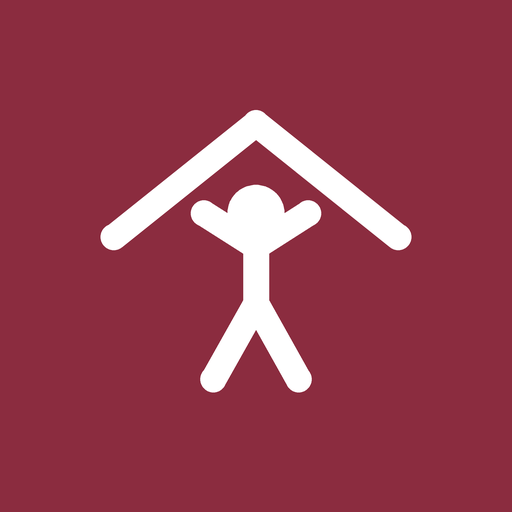

Приложение для Android
Тренировки дома — скачать приложение на 30 дней
Программа «Новичок» на 30 дней: 10–15 минут в день, без инвентаря, регистрации и интернета.
Откройте приложение — увидите «День 7 из 30» и одну кнопку «Начать тренировку». Таймер сам ведёт по упражнениям и отдыху, а серия закрытых дней растёт.


Как устроена программа
Тренировки дома на 30 дней: пять упражнений, таймер, серия
Нагрузка растёт от первой недели к четвёртой: в первый день под таймером четыре с половиной минуты, в тридцатый — почти восемь. Вместо видео — схема движения и короткая подсказка, поэтому приложение работает в самолёте, в метро и там, где интернет отключили.
Что умеет приложение
Всё для тренировок дома — без лишнего
Цена
Первая неделя бесплатно, дальше — одна покупка
Подписка — 249 ₽ в месяц или 990 ₽ в год — для тех, кому нужны и будущие программы. Оплата через RuStore, картами российских банков. Разовая покупка привязана к аккаунту RuStore и восстанавливается на новом телефоне.
Частые вопросы
Что обычно спрашивают
Нужен ли инвентарь для тренировок дома?
Нет. Все упражнения программы — с собственным весом: подъём коленей, приседания, планка, выпады, отжимания с колен, скручивания, плечевой мост. Хватит двух квадратных метров пола и удобной одежды. Гантели, коврик и резинки не понадобятся ни в один из тридцати дней.
Работает ли приложение без интернета?
Да, целиком. Программа, схемы движений и таймер лежат внутри приложения, серверов у него нет. Первая тренировка начинается сразу после установки, в самолёте или там, где мобильный интернет отключили. Сеть нужна только для оплаты и для показа рекламы в бесплатной версии.
Есть ли видео упражнений?
Нет, и это осознанное решение. Вместо видео — схема движения со стрелкой направления и подсказка в одну-две фразы. Схема читается за секунду, не требует интернета и не занимает сотни мегабайт. Приложениям с видео нужна сеть и аккаунт, а здесь нет ни того, ни другого.
Нужна ли регистрация или аккаунт?
Нет. Приложение не спрашивает имя, почту, телефон, вес, рост и пульс. Открыли — выбрали время напоминания — начали первый день. Прогресс хранится только на вашем телефоне; перенести его на другой можно файлом из настроек.
Что бесплатно, а что платно?
Бесплатно и без ограничения по времени: первая неделя программы «Новичок», таймер, серия, календарь, напоминания и перенос прогресса. Дни с 8-го по 30-й открывает разовая покупка за 590 ₽ — один раз, без подписки. Подписка — 249 ₽ в месяц или 990 ₽ в год — для тех, кому нужны и будущие программы.
Как оплатить из России?
Через RuStore: оплата проходит картой российского банка в платёжной форме самого магазина, без иностранных карт и без сторонних сервисов. Разовая покупка привязана к вашему аккаунту RuStore и восстанавливается после переустановки приложения или смены телефона.
Что будет, если пропустить день?
Программа не убежит вперёд: следующая тренировка остаётся тем же днём, пока вы его не закроете. Серия при пропуске прерывается, а лучшая серия сохраняется и показывается на экране прогресса. Догонять двумя тренировками за день не нужно — просто продолжайте.
Почему не приходят напоминания?
Чаще всего мешает телефон: отозванное разрешение, выключенный канал уведомлений или экономия батареи у некоторых производителей. В настройках есть строка «Напоминания не приходят?» — экран диагностики покажет, какая из проверок не пройдена, и откроет нужную системную настройку.
Можно ли перенести прогресс на другой телефон?
Да. В настройках есть «Сохранить прогресс в файл» и «Загрузить из файла»: файл читается любой таблицей и остаётся у вас — копия никуда не отправляется. На новом телефоне загрузите файл, и календарь, серия и текущий день программы восстановятся.
Подходит ли программа новичку и есть ли противопоказания?
Программа так и называется — «Новичок»: начинается с самого простого и растёт от недели к неделе, любое упражнение можно пропустить. Тренировки не заменяют консультацию врача: при травмах, беременности и хронических заболеваниях сначала посоветуйтесь со специалистом.
Приватность
Без регистрации, без веса, роста и пульса
Приложение не спрашивает вес, рост и пульс. Прогресс хранится только на вашем телефоне и никуда не отправляется, серверов у приложения нет.
Тренировки не заменяют консультацию врача: при травмах, беременности и хронических заболеваниях посоветуйтесь со специалистом.
Где скачать
Приложение — в RuStore
Android. RuStore предустановлен на всех смартфонах, которые продаются в России, — отдельно ставить его не нужно.